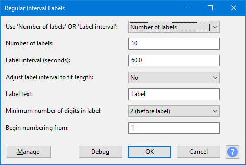

Regular Interval Labels
You can either choose the number of labels to be created or the interval between them. Each label produced can contain specified label text and the labels can be given sequential numbers before or after the text.
- Accessed by:
- 
{kind=link}
| After running "Regular Interval Labels", you can choose to export all the files in one process based on the label points. |
Use "Number of labels" OR "Label interval"
This enables you to choose the label placement method:
To create a chosen number of labels within the selection, select from the dropdown (this is the default setting).
To place labels within the selection a chosen distance apart, select from the dropdown then enter that distance in Label interval (seconds).
Number of labels
If you selected (the default) then your specified number of labels (default is 10) will be created. The number can be changed by typing in the input box, the allowed range is between 2 and 1000 labels.
Label interval
If you selected then the labels will be placed at your specified interval within the selected audio. The default interval is 60.0 seconds. The allowed range is between 0.001 and 3600 seconds.
Adjust label interval to fit length
This only operates if you have chosen the Label interval placement method.
If you select from the dropdown for this control, it adjusts your chosen label interval if necessary to make all the audio segments of equal length, including the final segment between the last label and the end of the selection.
When set to , the interval between labels will be exactly the length specified in the Label interval control, but the final segment from the last label to the end of the selection may be different (depending on whether the selection length is exactly divisible by the specified interval duration.
When is selected, the label interval will always be the length of the selection divided by the number of labels, irrespective of this setting.
The default setting for this control is .
Label text
The text that will be included in each label. The default setting is Label but this can be replaced by any text (or no text) by using the input box.
The label text may include spaces and/or punctuation characters, but note that if you intend to use the labels with Export Multiple, some characters may not be valid for file names.
Minimum number of digits in label
Choose the minimum number of number of digits in the label numbers and whether the number is placed before or after the label text. The default setting is . With that setting, if you had 10 labels with "Label" as the label text, the first label would be "01Label", the next "02Label" and the last would be "10Label".
If you select then no numbering will be applied to the labels. If you choose this and set no label text then you will produce a set of empty labels.
Begin numbering from
If a minimum number of digits has been chosen in the control above, enter the number from which the sequential numbering will start. The default value of 1 can be changed by typing in the input box. You can enter any whole number equal or greater than 0.
Buttons
Clicking on the command buttons give the following results:
- gives a dropdown menu enabling you to manage presets for the tool and to see some detail about the tool. For details see Manage presets.
- applies the effect to the selected audio with the current effect settings.
- aborts the effect and leaves the audio unchanged.
- brings you to the appropriate page in the Manual, this page.